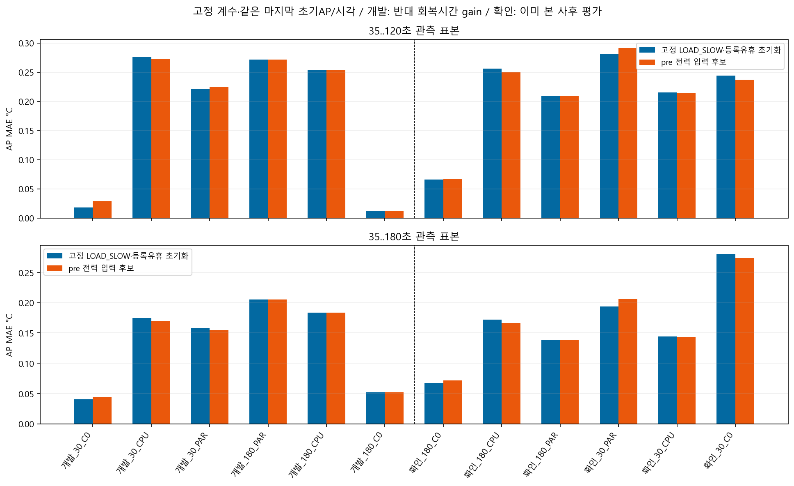
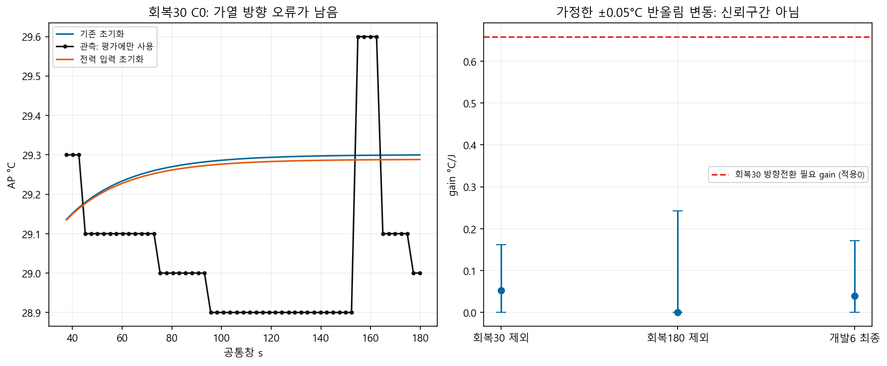
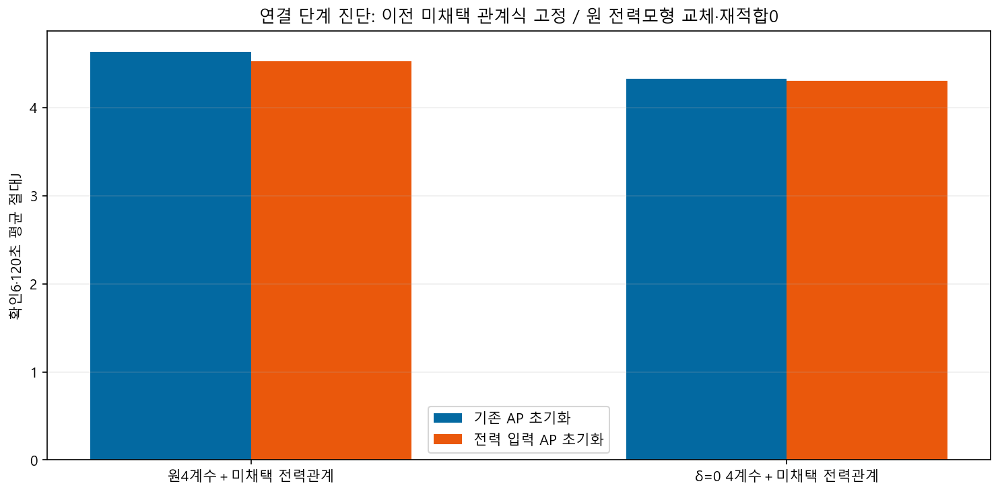

| 같은확인6·고정LOAD_SLOW | 기존초기화 | 전력입력초기화 |
|---|---|---|
| 35..120초 AP MAE | 0.21160°C | 0.21125°C |
| 35..180초 AP MAE | 0.16630°C | 0.16656°C |
| 평균최고온도절대오차·전체 | 0.08180°C | 0.08505°C |
원동결AP수식과의비교가아니며같은마지막AP/시각·기존fast4/slow1/β/τ/원전력proxy를유지한초기화비교입니다. 실제미래AP/전력은예측입력에없고같은세션표본을독립반복으로집계하지않았습니다.
모형·정확한판독·남은한계 · 의존성·재현 · 전12·관측시각·최대/최고/방향 · 검증

개발gain0/0.0525,최종0.0394. 가정한±0.05°C독립반올림변동에서gain0..0.1711이며신뢰구간은아닙니다. 회복30 방향을뒤집는값0.6588은16.7배이고가상개발pre 잔차RMS0.0575→0.1837°C로커집니다. 이값을후보/예측에적용하지않았습니다.

미채택한AP→전력관계의계수는고정했습니다. 원4계수와의관계J 평균4.637→4.531이지만원전력식3.913보다높습니다. 새에너지모형검증/정책절감/원관계채택이아닙니다.

전량짝표 · 4C0 방향경계 · J연결분모. 실제일정조건부·이미본자료의사후평가/live전달미구현·A24 raw=mA/절대J미인증·S26비혼합·정확도PASS없음.
문제세션원본의conditioning96요청과AP48표본/120.066초/2.1°C범위를확인했습니다. 현재target모형이slow초기상태0으로시작하는가정과이전실행이력의연결은아직미완료이며실제원인이라고확정하지않습니다. 원본3hash·가용성근거. 새측정을한것이아닙니다.